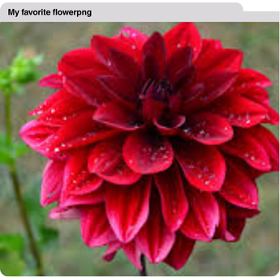

Hi, I am a flexible and versatile person who likes to try new foods and listen to new types of music. I am a visual who tends to catch on to things more quickly when skills or ideas are both modeled and audibly explained. As a computer scientist I am someone who is always looking for extra ways to make my projects more complex or aesthetically pleasing even if it involves skills that are challenging.